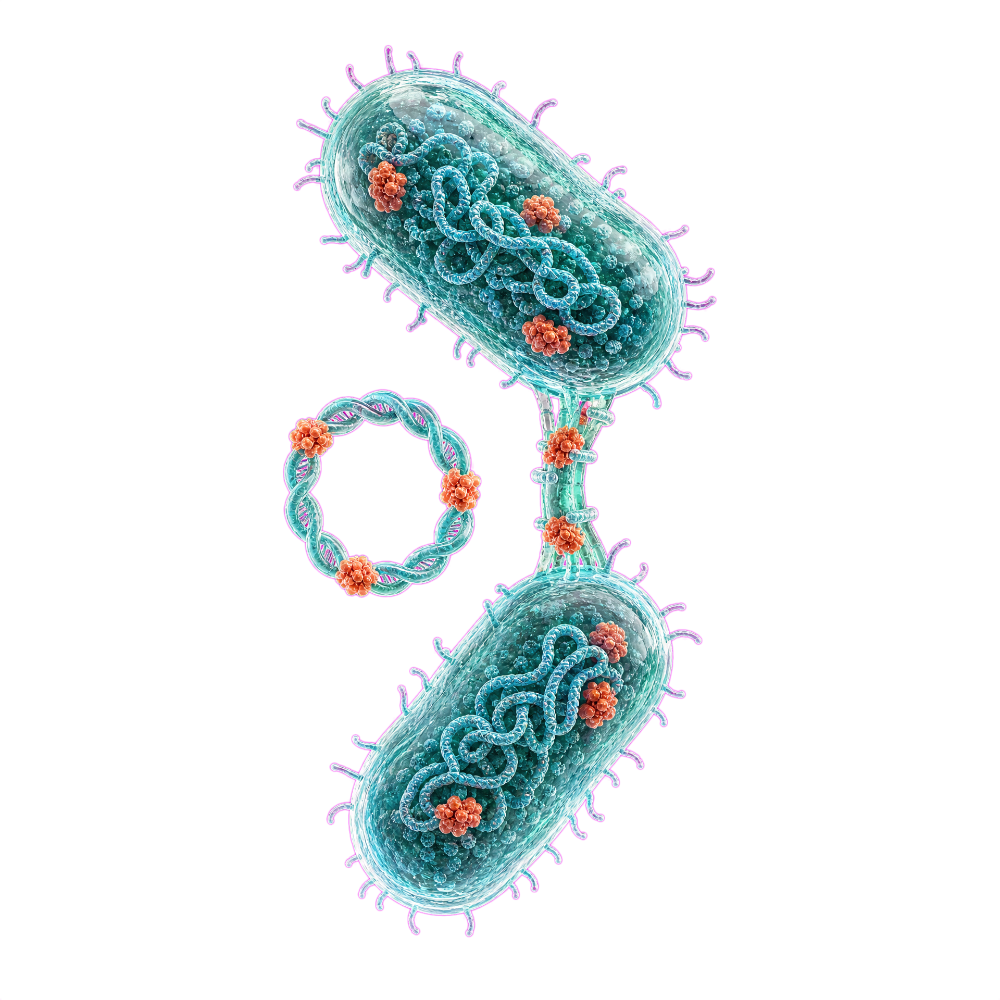
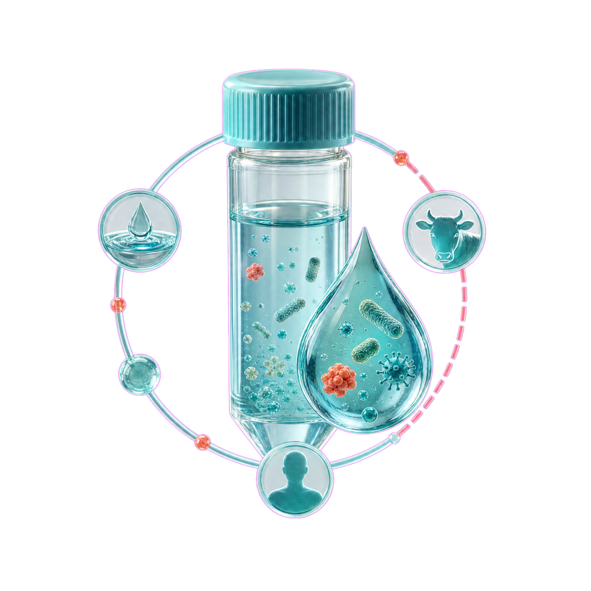

Genomic Epidemiology and the Environmental Resistome
The Journal of MetaResistome invites original research articles, bioinformatic methodology reports, and critical reviews for its inaugural volume. We welcome investigations characterizing resistome architecture, horizontal gene transfer in aquatic matrices, and clinical-environmental resistance interfaces.
Aims & Scope
JMR covers the full continuum of resistance biology—from molecular genetics and plasmid biology to metagenomic sewage epidemiology and clinical pathogen surveillance.
Guide for Authors
Clear requirements for article types, manuscript formatting, raw sequencing data deposition (INSDC/SRA), and reproducible bioinformatic code archiving.

High-Dimensional Resistome Dynamics
Tracing multidrug resistance gene networks across wastewater treatment effluent, hospital sewage, and downstream agricultural runoff.

One Health Molecular Surveillance
Integrating veterinary, human clinical, and ecological genomics to anticipate zoonotic transmission vectors and resistance dissemination.